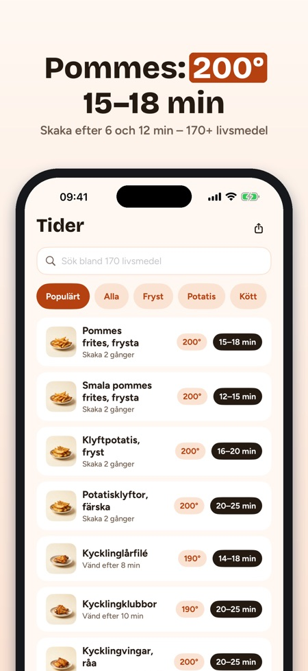
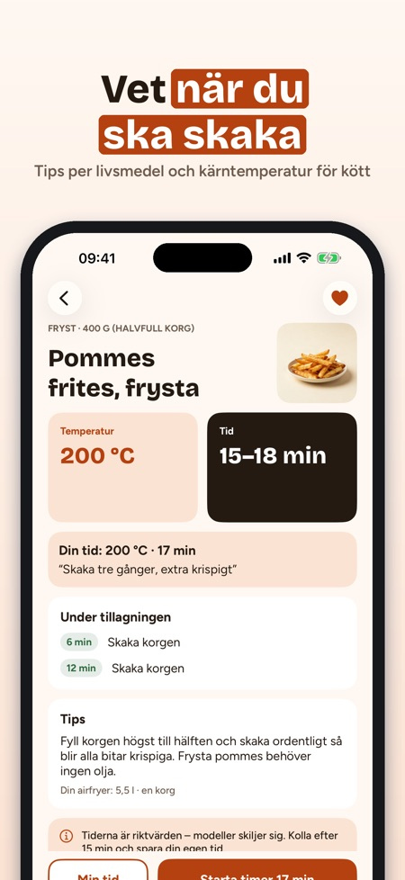
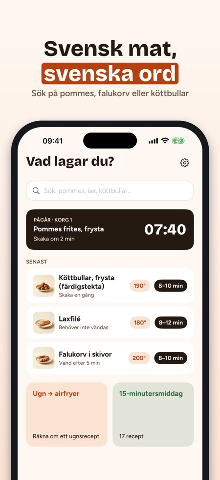

Krispa visar hur länge och hur varmt du ska ställa airfryern för över 170 livsmedel, från frysta pommes till laxfilé. Sök på svenska och få timer som påminner dig när det är dags att skaka korgen.



Krispa visar temperatur, tidsintervall och när du ska skaka för frysta pommes och många andra livsmedel. Tiderna är riktvärden eftersom modeller skiljer sig, så kolla alltid i tid.
Tidstabellen täcker 170+ livsmedel, bland annat köttbullar, falukorv, laxfilé, kyckling, grönsaker, bröd och snacks.
Ja. Ange ugnens temperatur och tid så får du ett förslag för airfryern och när du ska kolla. Det är en tumregel och är markerat som det.
Ja, appen fungerar utan internet och du behöver inget konto.
Tidstabellen, omvandlaren, en timer och 10 recept ingår utan köp. Krispa Plus öppnar alla 68 recept, upp till fyra timers, lagaläget, egna tider och inköpslistan.
Du väljer en årsprenumeration som förnyas automatiskt och kan avslutas i App Store-inställningarna, eller ett engångsköp. Nya prenumeranter börjar årsplanen med 7 dagars provperiod.
Kyckling, fläsk och färs visar en lägsta kärntemperatur, det strängaste rådet bland de nordiska livsmedelsmyndigheterna. Kontrollera även att fisk är genomstekt.
Rätt tid, rätt grader – på svenska.
Inga annonser, inget konto – tidstabellen fungerar utan köp.
Krispa är airfryer-appen för svenska kök: hur länge och hur varmt för 170+ livsmedel, en omvandlare för ugnsrecept och timers som påminner dig när det är dags att skaka korgen.
TIDSTABELL FÖR 170+ LIVSMEDEL
• Frysta pommes, köttbullar, falukorv, laxfilé, kyckling, grönsaker, bröd och snacks
• Temperatur, tidsintervall och när du ska skaka eller vända
• Sök på svenska – ”pommes”, ”lax”, ”köttbullar”
• Tips om mängd, olja och hur du får det krispigt
UGN → AIRFRYER
• Ange ugnens temperatur och tid (över/undervärme eller varmluft)
• Få ett förslag för airfryern och när du ska kolla – en tumregel, tydligt märkt som det
TIMERS SOM SÄGER TILL
• Notis när det är dags att skaka eller vända och när maten är klar
• Två korgar? Krispa startar den kortare timern senare så att båda blir klara samtidigt
• Upp till fyra timers samtidigt med Krispa Plus
• Nedräkningen syns på låsskärmen och i Dynamic Island
68 EGNA RECEPT
• Vardagsmiddagar, tillbehör, snacks, bakning och julmat
• Ändra antal portioner – mängderna räknas om
• Lagaläge steg för steg med timer per steg; skärmen förblir tänd
• Inköpslista från recepten, sorterad efter avdelning
MINA TIDER
• Spara favoriter och din egen tid, temperatur och anteckning – ”våra pommes: 17 min, skaka tre gånger”
LIVSMEDELSSÄKERHET
Kyckling, fläsk och färs visar en lägsta kärntemperatur – det strängaste rådet bland de nordiska livsmedelsmyndigheterna. Fisk: kontrollera att den är genomstekt. Tiderna är riktvärden – modeller skiljer sig, så kolla alltid i tid.
HJÄLP
Förvärmning, bakplåtspapper, rengöring, placering och säkerhet, vit rök, två korgar och varför det inte blir krispigt.
KRISPA PLUS
Tidstabellen, omvandlaren, en timer och 10 recept ingår utan köp. Krispa Plus öppnar alla 68 recept, upp till fyra timers, lagaläget, egna tider och inköpslistan. Välj årsprenumeration (förnyas automatiskt, avsluta när som helst i App Store-inställningarna) eller ett engångsköp. Nya prenumeranter börjar årsplanen med 7 dagars provperiod.
Fungerar utan internet. Inget konto. Krispa är inte knuten till något airfryer-märke.